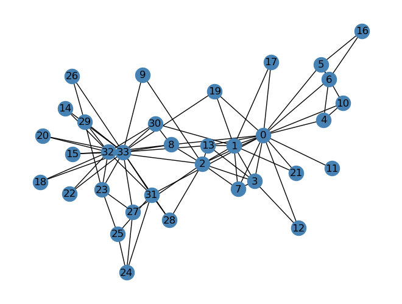

U, sigma, V = np.linalg.svd(A)# create the D matrix in the SVDD = np.zeros_like(A,dtype=float) # matrix of zeros of same shape as AD[:min(A.shape),:min(A.shape)] = np.diag(sigma) # singular values on the main diagonalD
Above are the codes given to implement a Single Value Decomposition of an image. We can change the value of k to reduce the size of the original image. We will now try to use these codes to reduce a gif.
Above is my favorite character from my favorite game, whose image has been grayscaled.
An \(m \times n\) greyscale image needs \(mn\) numbers to represent it. If we use the SVD to compress the image using k components, we need to store the following matrices:
The \(m \times k\) matrix \(\textbf{U}\)
The \(k \times k\) matrix \(\textbf{D}\)
The \(k \times n\) matrix \(\textbf{V}\)
The total numbers needed to reconstruct the image is then \(mk+k^2+kn\). Using this, we get the formula for the amount of storage needed for a reconstruction as a fraction of the amount of storage needed for the original image:
\[ \frac{mk+k^2+kn}{mn} \times 100 \%\]
def svd_reconstruct(image, k):# Compute the singular value decomposition of the image U, sigma, V = np.linalg.svd(image, full_matrices=False)# Truncate the matrices to keep only the first k singular values Uk = U[:, :k] Vk = V[:k, :] D = np.zeros_like(image,dtype=float) # matrix of zeros of same shape as A D[:min(image.shape),:min(image.shape)] = np.diag(sigma) Dk = D[:k, :k]# Reconstruct the image using the truncated matrices reconstructed_image = Uk@Dk@Vkreturn reconstructed_image
def svd_experiment(image, k_list):# Presents a series of reconstructions of the same image for different values of kfor k in k_list: # k_list is a list or array of k values fig, axarr = plt.subplots() hello = svd_reconstruct(image, k) # reconstruct image m, n = image.shape mn = m*n stored = m*k + k**2+ k*n axarr.imshow(hello, cmap ="Greys") axarr.axis("off") axarr.set(title =str(k) +'components, % storage = '+str(round(stored/mn*100, 3))) plt.show()
hi = np.arange(5,81,5)svd_experiment(grey_img, hi)
Using only 6.5% of the initial storage for the original image, we can still make out what it is about: Razor eating some meat, out in the wild.
Part 2: Spectral Community Detection
We will move on to identifying clusters in point cloud data sets. Below is a function that uses the Laplacian Spectral Clustering method to assign binary labels to nodes of a social network.
import networkx as nxdef spectral_clustering(G):# Get the adjacency matrix of the graph A = nx.adjacency_matrix(G).toarray()# Compute the degree matrix of the graph D = np.diag(np.sum(A, axis=1))# Compute the Laplacian matrix of the graph L = np.linalg.inv(D)@(D - A)# Compute the eigenvectors of the Laplacian matrix eigvals, eigvecs = np.linalg.eig(L)# Sort the eigenvectors by their corresponding eigenvalues sorted_indices = np.argsort(eigvals) sorted_eigvecs = eigvecs[:, sorted_indices]# Cluster the nodes based on the second smallest eigenvector labels = sorted_eigvecs[:, 1] >0return labels*1
We will use the karate club social network.
G = nx.karate_club_graph()layout = nx.layout.fruchterman_reingold_layout(G)nx.draw(G, layout, with_labels=True, node_color ="steelblue")

Our code predicts where each member would end up if the club got divided into 2. We will compare our code’s prediction to what actually happened.
clubs = spectral_clustering(G)nx.draw(G, layout, with_labels=True, node_color = ["orange"if clubs[i] ==0else"steelblue"for i in G.nodes()], edgecolors ="black")
C:\Users\ledtr\AppData\Local\Temp\ipykernel_20396\3045702461.py:5: FutureWarning: adjacency_matrix will return a scipy.sparse array instead of a matrix in Networkx 3.0.
A = nx.adjacency_matrix(G).toarray()
And below is the actual division that happened.
clubs = nx.get_node_attributes(G, "club")nx.draw(G, layout, with_labels=True, node_color = ["orange"if clubs[i] =="Officer"else"steelblue"for i in G.nodes()], edgecolors ="black"# confusingly, this is the color of node borders, not of edges )
Our code came pretty close to reality. The only difference is that while our code predicted that the eight member would end up in Officer’s club, they actually were in Mr. Hi’s club. A lot of factors can contribute to 8’s decision to stick with Mr. Hi: parental pressure (they may have said something like you have to stick by your mentor etc.), social hierarchy (8 was afraid of upsetting Mr. Hi), etc. With all these factors, I’m surprised that this predictive model was almost accurate. In order to say whether other social phenomena can be predicted this way, we need other social networks with binary outcomes such as this example. I tried digging on the Internet but every post about spectral clustering only mentions this example.